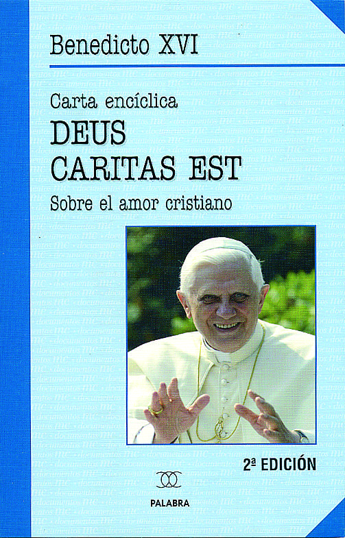
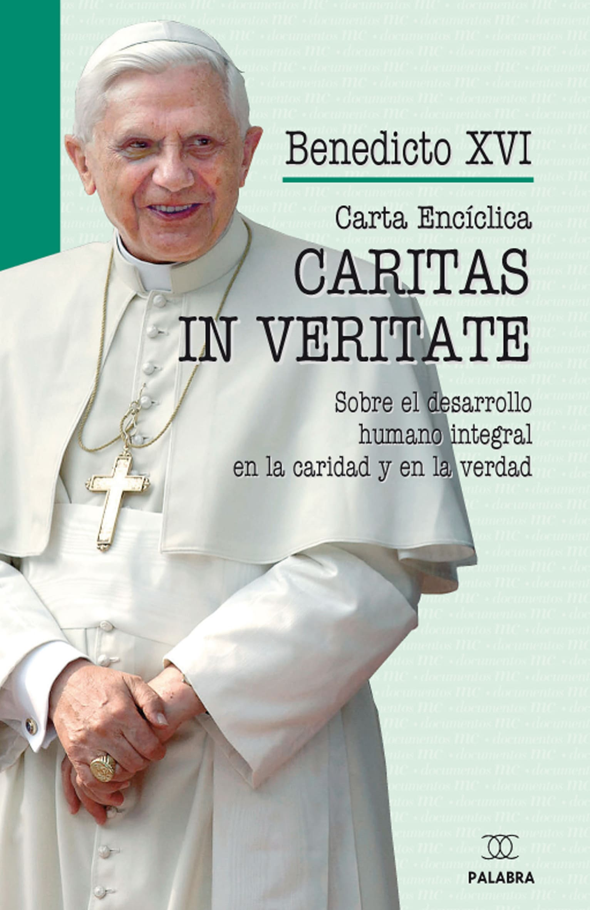
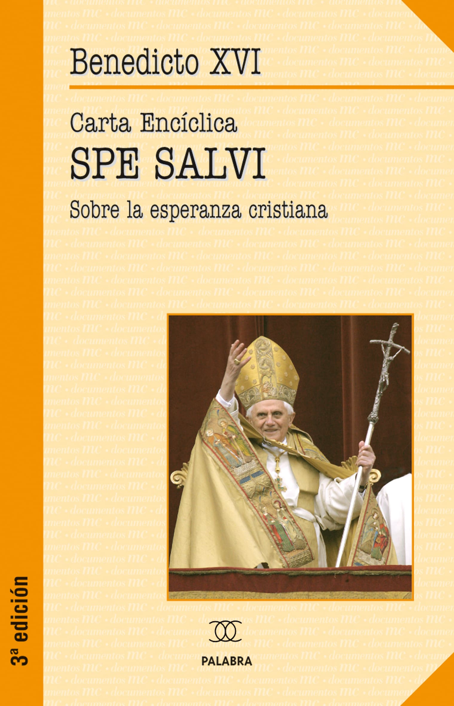
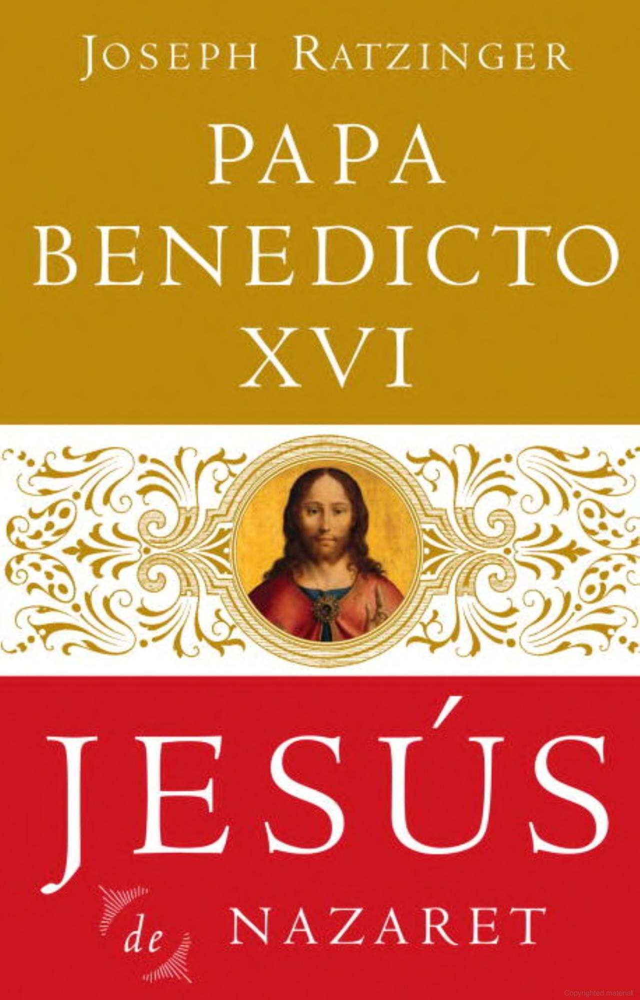
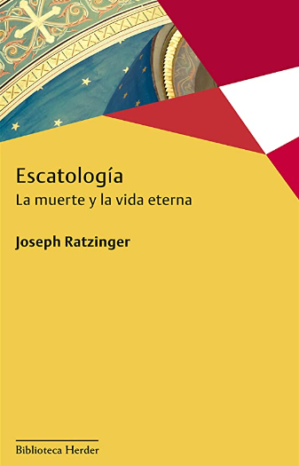
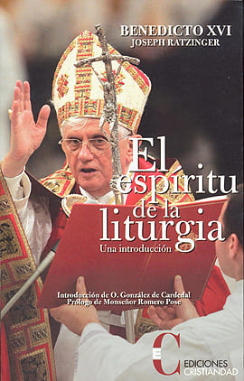

Catálogo de libros

Deus caritas est.
celebre encíciclipa del santo padre sobre el amor cristiano... ver más

Caritas in veritate.
Sobre el desarrollo humano integral en la caridad y en la verdad... ver más

Spe salvi.
celebre encícilica del santo padre sobre la esperanza cristiana... ver más

Jesus de Nazareth.
Benedicto XVI rescata la figura de Jesús de recientes descripciones «populares» y restaura la verdadera identidad de Jesús que nos presentan los Evangelios.... ver másIntroduccion al cristianismo.
Lecciones sobre el credo apostólico. DECIMOSEXTA EDICIÓN.... ver másInfancia de Jesus.
escrito por El Papa, detallando como la historia de la infancia y niñez de Jesús es hoy por hoy aun tan relevante como fue hace dos mil años... ver másDialéctica de la secularización.
Jürgen Habermas, debatía en público con uno de los principales representantes de la Iglesia Católica, el entonces cardenal Joseph Ratzinger, hoy papa Benedicto XVI... ver más

Escatología: La muerte y la vida eterna.
Cuando en 1977 Joseph Ratzinger, entonces profesor de Teología recién designado obispo de Múnich, presentaba éste su primer libro, la Escatología apenas dejaba de ser... ver más
